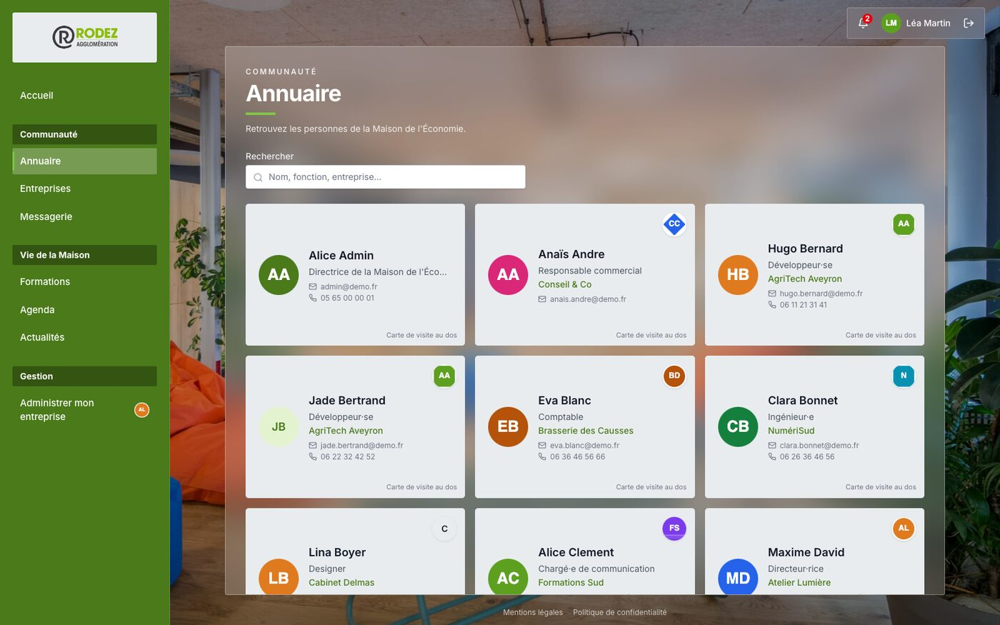
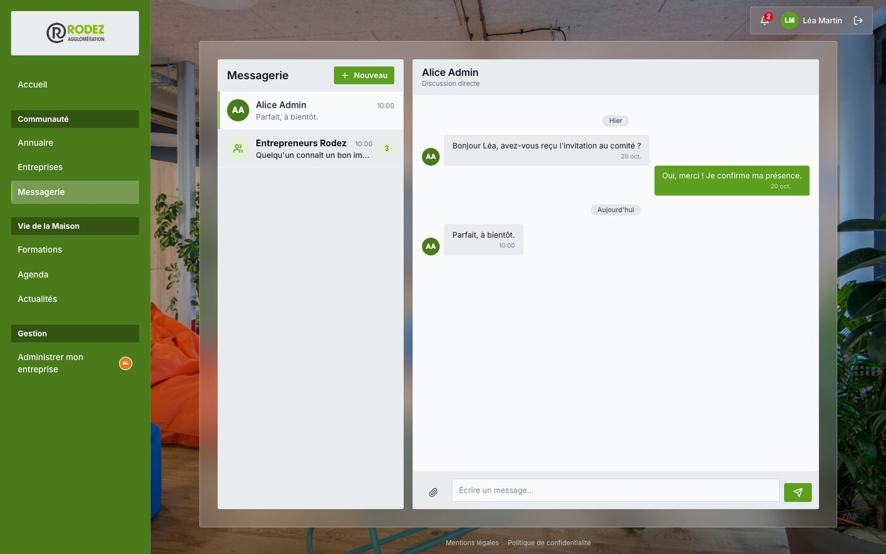
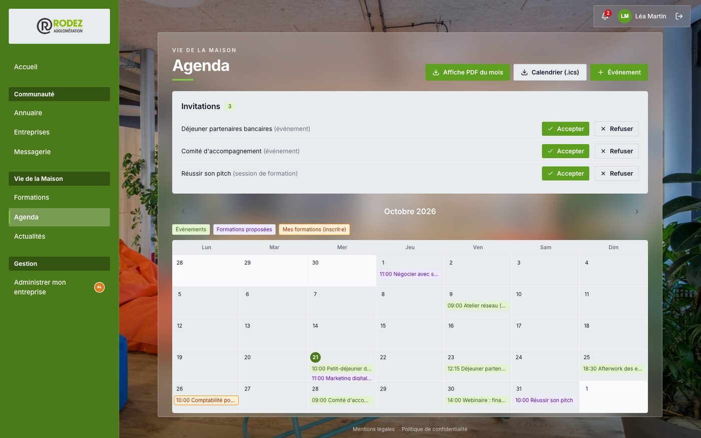
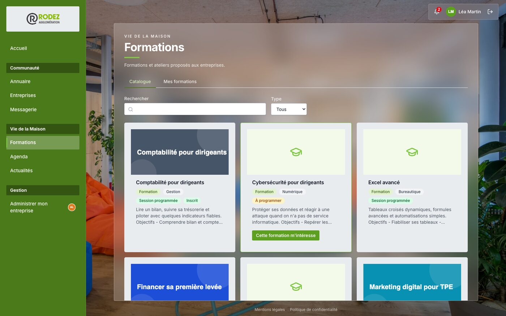
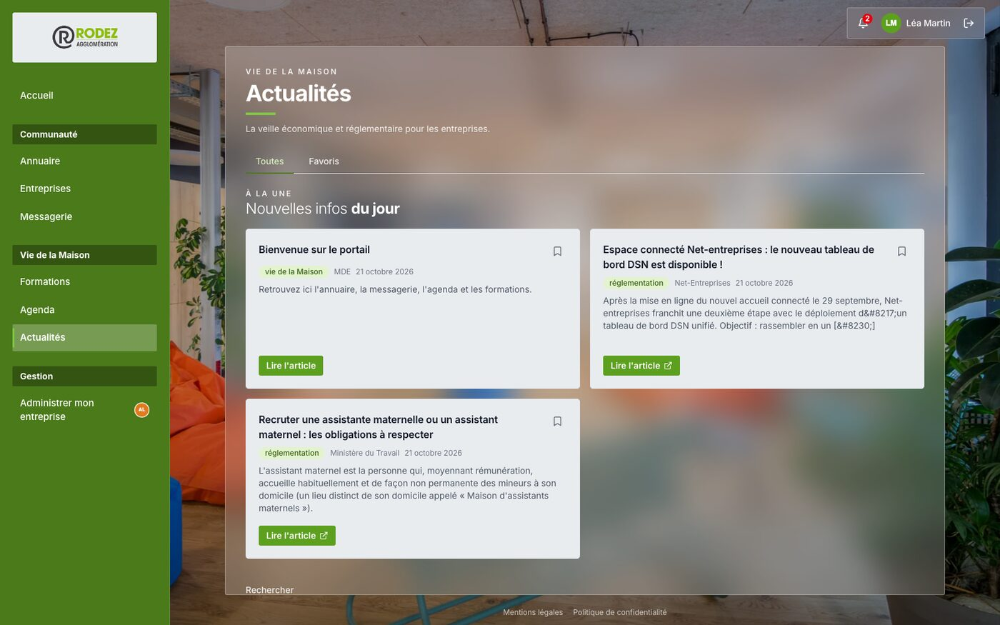
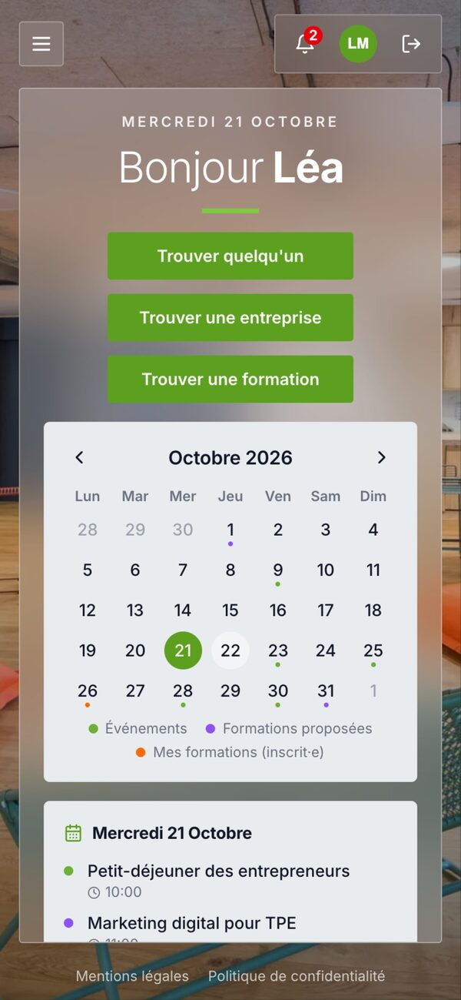

Annuaire et cartes de visite
Chaque personne a sa tuile, qui se retourne sur sa carte de visite. Recherche par nom, fonction ou entreprise, sans tenir compte des accents ; message direct en un clic.

Maison de l'Économie · Rodez Agglomération
Un espace interne pour se trouver, se parler, se retrouver à un événement et se former : annuaire avec cartes de visite, messagerie en temps réel, agenda, formations et veille économique.

Cinq outils reliés entre eux, pensés pour des équipes qui partagent les mêmes locaux.
Chaque personne a sa tuile, qui se retourne sur sa carte de visite. Recherche par nom, fonction ou entreprise, sans tenir compte des accents ; message direct en un clic.

Conversations directes et groupes, pièces jointes, messages non lus. Un groupe peut être créé en sélectionnant tout le monde, ou toute une entreprise.

Événements publics ou sur invitation, sessions de formation en couleur (proposées, ou déjà inscrit), export en affiche PDF prête à imprimer.

Une formation n'est pas programmée ? On le signale d'un clic. L'équipe voit combien de personnes l'attendent, planifie une session, et chacun est prévenu.

Une veille réglementaire synchronisée chaque jour, avec une rubrique « Nouvelles infos du jour » et la possibilité de garder ses articles en favoris.

Menu en tiroir, tableaux adaptés, notifications et sessions de formation lisibles sur un petit écran.

La démo contient un jeu de données fictif (12 entreprises, une quarantaine de personnes). Mot de passe commun : demo-password-1
lea@demo.fr — responsable d'une entreprise (administre sa fiche)hugo@demo.fr — simple membrestaff@demo.fr — équipe de la Maison (formations, actualités)admin@demo.fr — super administrateur